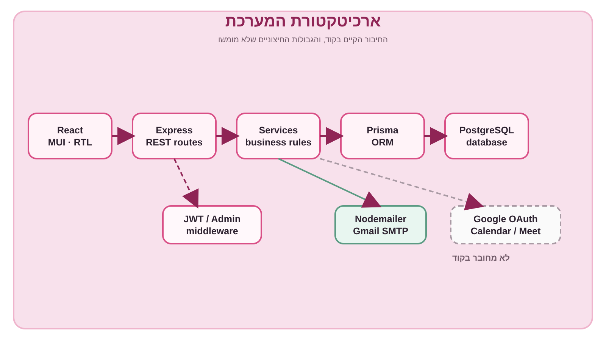
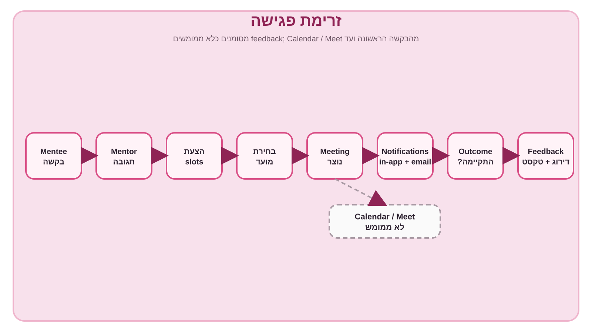
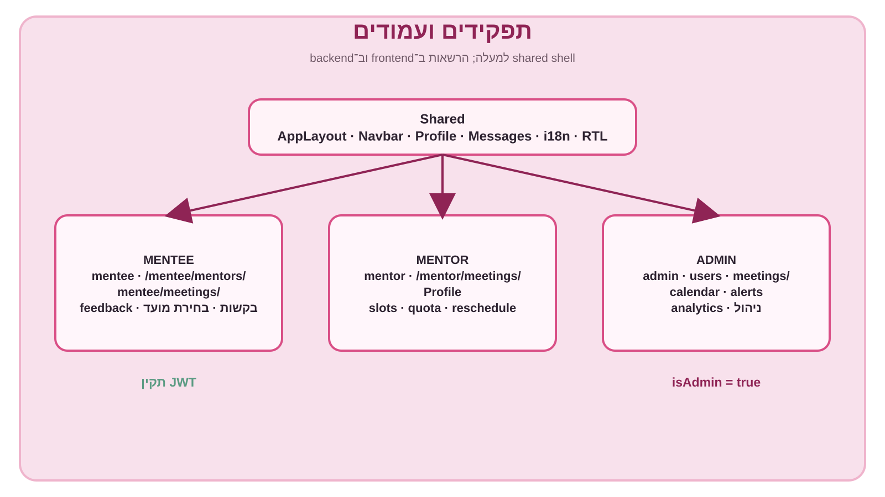
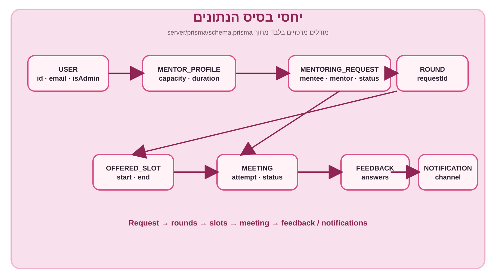
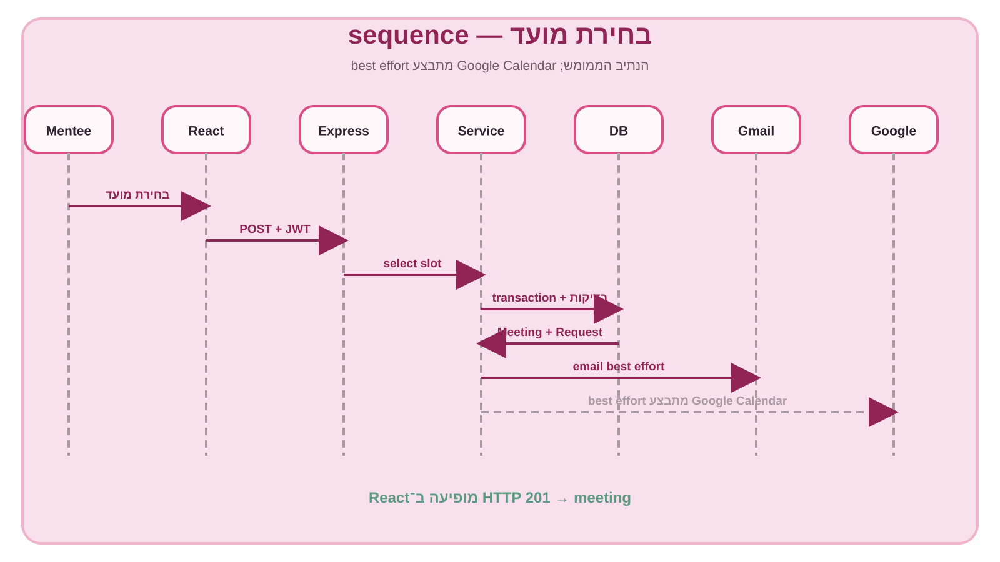

1. ארכיטקטורת המערכת
React שולח בקשות דרך Axios אל Express. ה־routes מעבירים את העבודה ל־services, Prisma קורא וכותב PostgreSQL, ו־Nodemailer שולח email דרך Gmail SMTP.

{kind=link}
2. זרימת פגישה
בקשה עוברת מתגובה של mentor להצעת slots, בחירת mentee, יצירת Meeting, התראות, outcome ומשוב. Calendar/Meet מסומן במפורש כלא ממומש.

{kind=link}
3. תפקידים ועמודים
ה־shell המשותף כולל layout, navbar, profile, messages, i18n ו־RTL. הגישה ל־admin דורשת משתמשת עם isAdmin=true, והאזורים האישיים דורשים JWT.

{kind=link}
4. יחסי בסיס הנתונים
זהו ER מצומצם של המודלים המרכזיים: משתמשת, פרופיל mentor, בקשה, rounds, slots, meetings, feedback והתראות.

{kind=link}
5. בחירת מועד — sequence
לחיצה על בחירת מועד מובילה ל־POST מאומת, בדיקות בשירות, transaction ליצירת Meeting ועדכון Request, שליחת email ו־HTTP 201. אין קריאה ל־Google Calendar בקוד.

{kind=link}
הערת דיוק להצגה: קיימת אינטגרציית Gmail/Nodemailer, אבל לא קיימת אינטגרציה פעילה עם Google OAuth, Google Calendar או Google Meet. ה־FullCalendar הוא calendar פנימי בצד ה־admin.